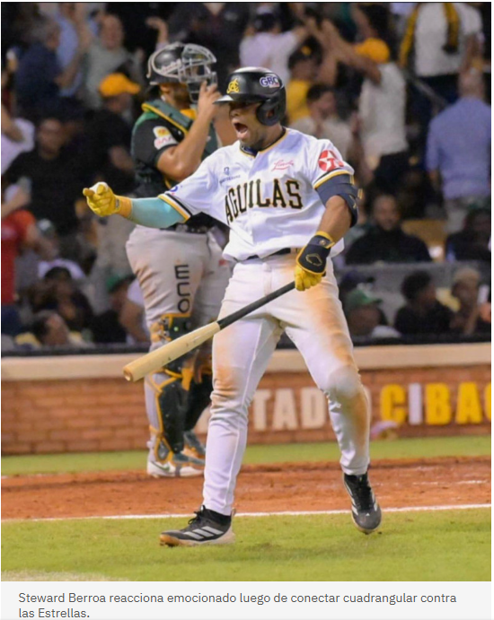
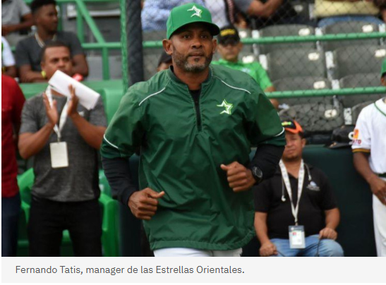
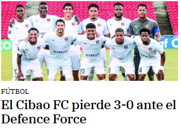
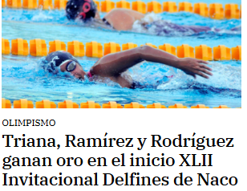
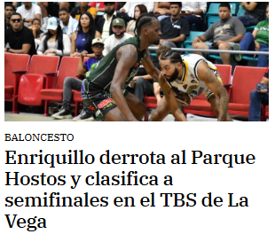

Steward Berroa se le escapó a la delincuencia de Las Cañitas
Creció en un entorno muy hostil y marginado, pero eso no fue impedimento para llegar a las Grandes Ligas

 Redacion de Periodico Digital
Redacion de Periodico Digital“Uno primero lo ve en el Playstation, luego en la mente, después uno lo sueña, y cuando entonces se hace realidad se convierte en la mayor satisfacción de la vida.”
Fernando Tatis será mánager de los Algodoneros de la Liga Mexicana en el 2026
Actualizado
El dominicano Fernando Tatis, con experiencia en MLB como jugador, manager en Liga de Beisbol Profesional de la República Dominicana y recientemente elegido Dirigente del Año en la temporada 24-25 en su país, se une al club Algodoneros del Unión Laguna para tomar el mando del equipo.
Redacion de Periodico Digital  